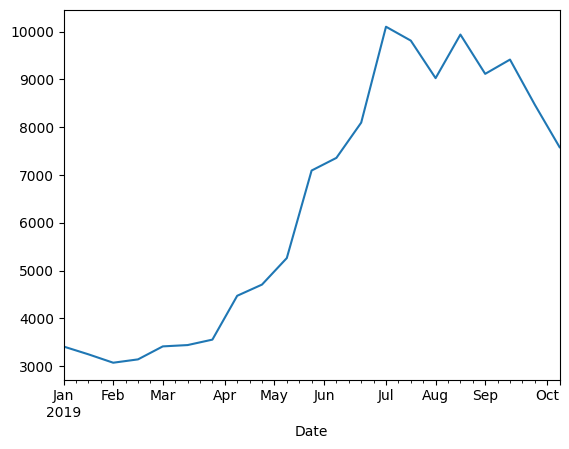
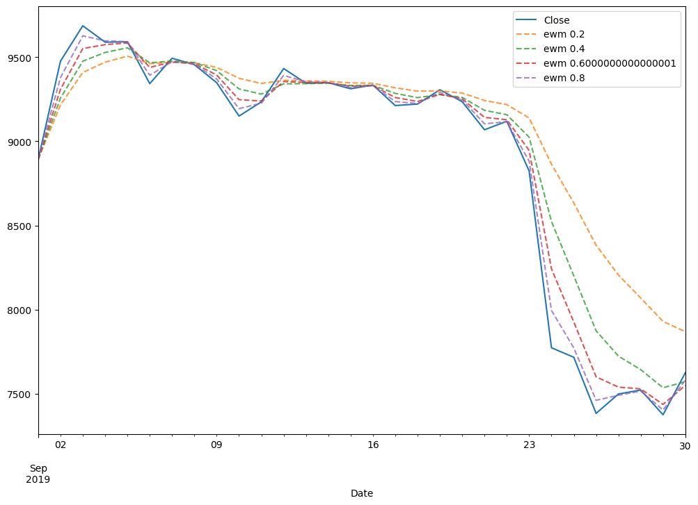

18: Pandas and Timeseries#
1. Working with Timeseries#
import numpy as np
import matplotlib.pyplot as plt
import pandas as pd
bitcoin = pd.read_csv('../data/BTC-EUR.csv', index_col='Date', parse_dates=True)
bitcoin.head()
| Open | High | Low | Close | Adj Close | Volume | |
|---|---|---|---|---|---|---|
| Date | ||||||
| 2011-10-04 | 3.700 | 3.821 | 3.746 | 3.750 | 3.750 | 1357 |
| 2011-10-05 | 3.750 | 3.820 | 3.650 | 3.676 | 3.676 | 3349 |
| 2011-10-06 | 3.676 | 3.743 | 3.450 | 3.550 | 3.550 | 6642 |
| 2011-10-07 | 3.550 | 3.590 | 2.900 | 3.293 | 3.293 | 7135 |
| 2011-10-08 | 3.293 | 3.283 | 2.872 | 2.890 | 2.890 | 2007 |
bitcoin['Close'].plot(figsize=(9, 6))
plt.show()
bitcoin.index
DatetimeIndex(['2011-10-04', '2011-10-05', '2011-10-06', '2011-10-07',
'2011-10-08', '2011-10-09', '2011-10-10', '2011-10-11',
'2011-10-12', '2011-10-13',
...
'2019-09-25', '2019-09-26', '2019-09-27', '2019-09-28',
'2019-09-29', '2019-09-30', '2019-10-01', '2019-10-02',
'2019-10-03', '2019-10-04'],
dtype='datetime64[ns]', name='Date', length=2923, freq=None)
bitcoin.loc['2017':'2019','Close'].plot()
<AxesSubplot:xlabel='Date'>
2. Resample#
bitcoin.loc['2019', 'Close'].resample('M').plot()
plt.show()
bitcoin.loc['2019', 'Close'].resample('2W').mean().plot()
plt.show()

bitcoin.loc['2019', 'Close'].resample('2W').std().plot()
plt.show()
plt.figure(figsize=(12, 8))
bitcoin.loc['2019', 'Close'].plot()
bitcoin.loc['2019', 'Close'].resample('M').mean().plot(label='moyenne par mois', lw=3, ls=':', alpha=0.8)
bitcoin.loc['2019', 'Close'].resample('W').mean().plot(label='moyenne par semaine', lw=2, ls='--', alpha=0.8)
plt.legend()
plt.show()
3. Aggregate#
m = bitcoin['Close'].resample('W').agg(['mean', 'std', 'min', 'max'])
plt.figure(figsize=(12, 8))
m['mean']['2019'].plot(label='moyenne par semaine')
plt.fill_between(m.index, m['max'], m['min'], alpha=0.2, label='min-max par semaine')
plt.legend()
plt.show()
bitcoin.loc['2019', 'Close'].resample('W').agg(['mean', 'std', 'min', 'max']).plot()
<AxesSubplot:xlabel='Date'>
4. Moving Average et EWM#
plt.figure(figsize=(12, 8))
bitcoin.loc['2019-09', 'Close'].plot()
bitcoin.loc['2019-09', 'Close'].rolling(window=7).mean().plot(label='non centre', lw=3, ls=':', alpha=0.8)
bitcoin.loc['2019-09', 'Close'].rolling(window=7, center=True).mean().plot(label='centre', lw=3, ls=':', alpha=0.8)
bitcoin.loc['2019-09', 'Close'].ewm(alpha=0.6).mean().plot(label='ewm', lw=3, ls=':', alpha=0.8)
plt.legend()
plt.show()
plt.figure(figsize=(12, 8))
bitcoin.loc['2019-09', 'Close'].plot()
for i in np.arange(0.2, 1, 0.2):
bitcoin.loc['2019-09', 'Close'].ewm(alpha=i).mean().plot(label=f'ewm {i}', ls='--', alpha=0.8)
plt.legend()
plt.show()

5. Comparaison of 2 timeseries#
ethereum = pd.read_csv('../data/ETH-EUR.csv', index_col='Date', parse_dates=True)
btc_eth = pd.merge(bitcoin, ethereum, on='Date', how='inner', suffixes=('_btc', '_eth'))
btc_eth[['Close_btc', 'Close_eth']]['2019-09'].plot(subplots=True, figsize=(12, 8))
/tmp/ipykernel_3878297/944741524.py:1: FutureWarning: Indexing a DataFrame with a datetimelike index using a single string to slice the rows, like `frame[string]`, is deprecated and will be removed in a future version. Use `frame.loc[string]` instead.
btc_eth[['Close_btc', 'Close_eth']]['2019-09'].plot(subplots=True, figsize=(12, 8))
array([<AxesSubplot:xlabel='Date'>, <AxesSubplot:xlabel='Date'>],
dtype=object)
6. Exercice and Solution#
data = bitcoin.copy()
data['Buy'] = np.zeros(len(data))
data['Sell'] = np.zeros(len(data))
data['RollingMax'] = data['Close'].shift(1).rolling(window=28).max()
data['RollingMin'] = data['Close'].shift(1).rolling(window=28).min()
data.loc[data['RollingMax'] < data['Close'], 'Buy'] = 1
data.loc[data['RollingMin'] > data['Close'], 'Sell'] = -1
Solution#
Show code cell content
start ='2019'
end='2019'
fig, ax = plt.subplots(2, figsize=(12, 8), sharex=True)
#plt.figure(figsize=(12, 8))
#plt.subplot(211)
ax[0].plot(data['Close'][start:end])
ax[0].plot(data['RollingMin'][start:end])
ax[0].plot(data['RollingMax'][start:end])
ax[0].legend(['close', 'min', 'max'])
ax[1].plot(data['Buy'][start:end], c='g')
ax[1].plot(data['Sell'][start:end], c='r')
ax[1].legend(['buy', 'sell'])
<matplotlib.legend.Legend at 0x7f2660792ac0>